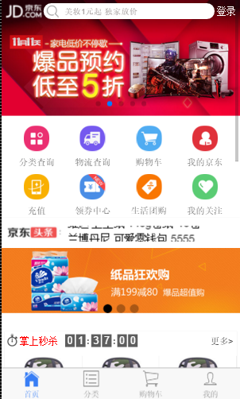
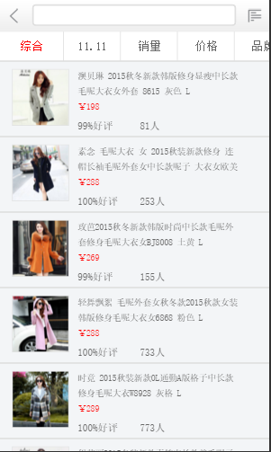

ionic服务器搭建
一、混合app开发课程介绍
- 1.1 什么是混合app
application（应用），Hybrid app（开发app的一种方式。）
用web前端的知识开发出来app的方式就叫做混合app开发。
原生的app。Native app - 1.2 为什么要学习这部分课程那？
“钱”多，“钱途光明”
有移动开发经验的开发人员比普通的web前端开发人员工资要高出一大截。 - 1.3 混合开发课程的目标是什么？
我们用学过的前端知识可以开发出一个可以安装在手机里面的app。
顺便复习前边的基础。 - 1.4 混合app开发部分课程要讲什么东西？
Ionic、react Native - 1.5 仿京东商城项目演示
下面的截图就是用混合开发中Ionic框架方式开发的：

